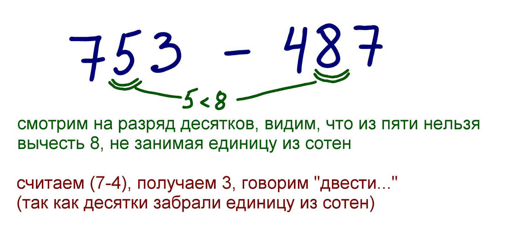
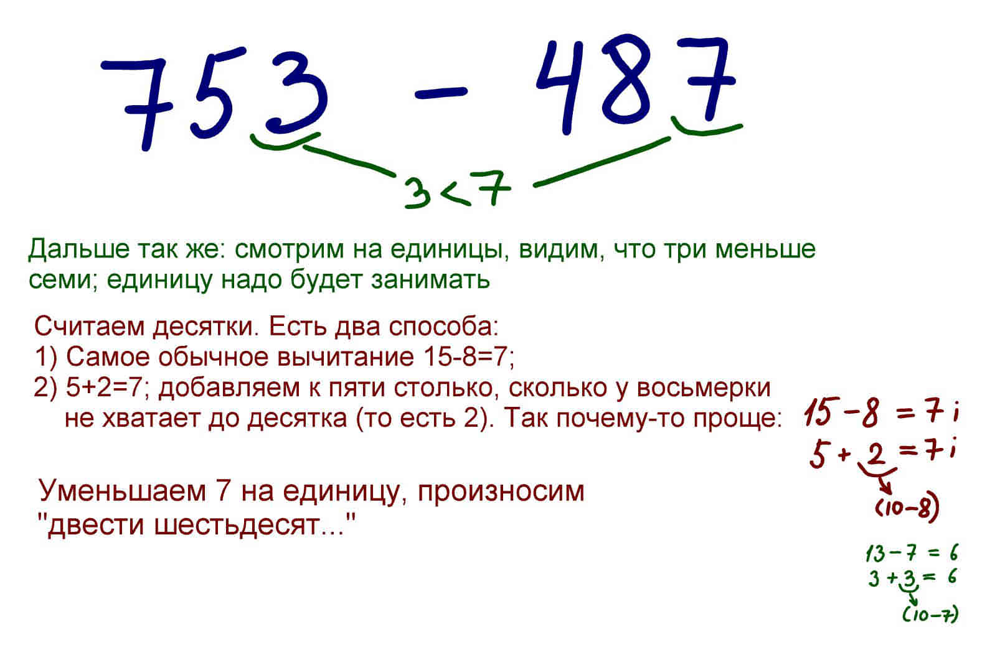
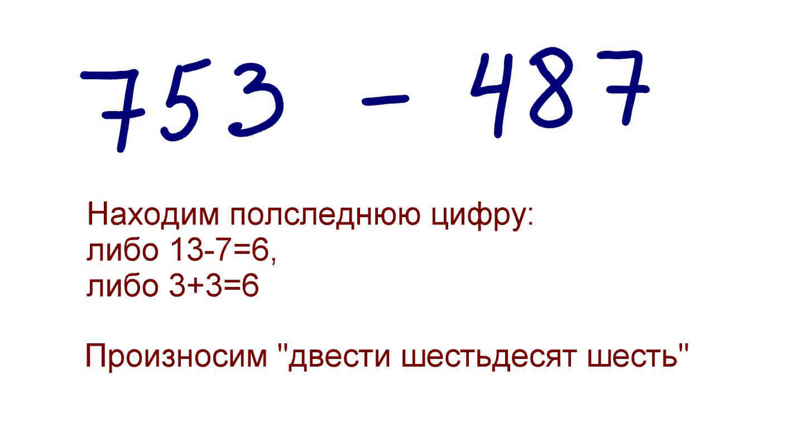

Можно было бы и не писать про вычитание, поскольку оно делается точно по принципу сложения, только при сложении мы прибавляли единицу, если следующий разряд "переваливал" за десяток, а вычитая, наоборот, будем уменьшать на единицу.
Есть один способ упростить себе жизнь: допустим, мы вычитаем (a-b). Можно заменить вычитание сложением, если взять какое-нибудь опорное число d, которое меньше a и больше b. Берем разницу (a-d) и прибавляем к ней разницу (d-b).
Например, 121-87. Опорным числом назначаем 100, складываем 21 и 13, получаем 34. Понятно, что удобные опорные числа - это те, которые кратны десяти, однако способ работает и с любыми другими числами.
В этом примере как раз удобно воспользоваться опорным числом 10: для нахождения десятков сложим 5 и 2, уменьшим результат на единицу, можем произносить "двести шестьдесят..."
Теперь осталось найти единицы. Опять берем опорное число 10, складываем разницу (3+3), это и будет последней цифрой ответа.
